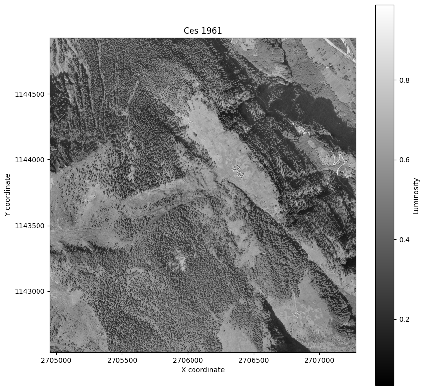
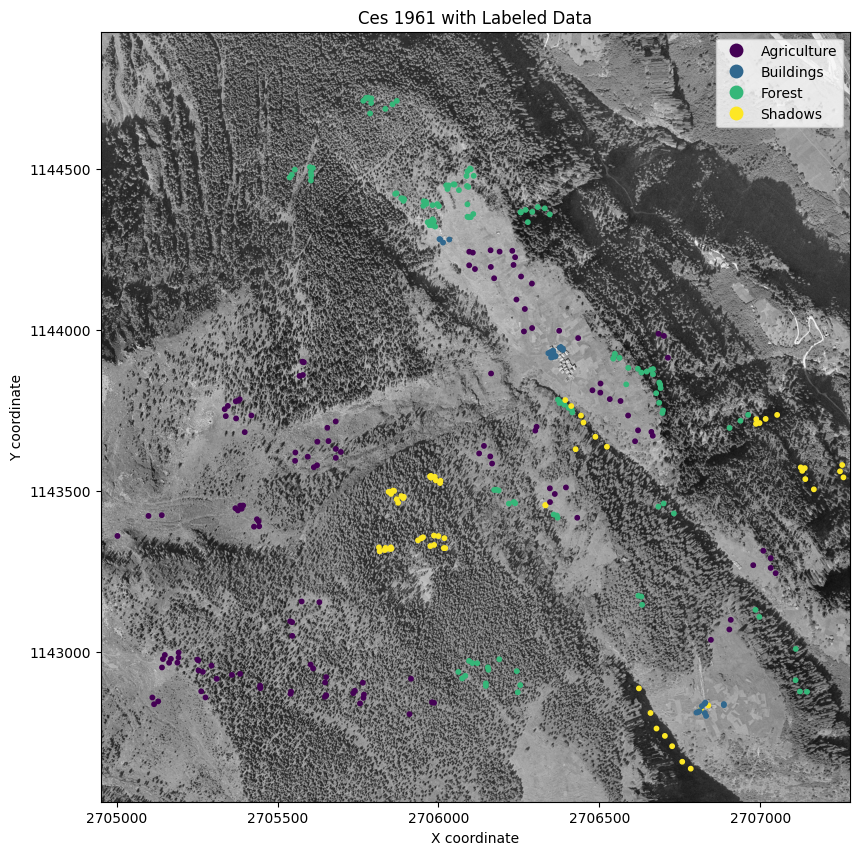
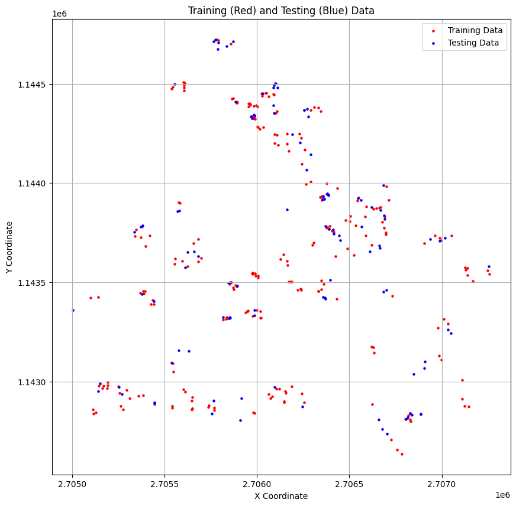
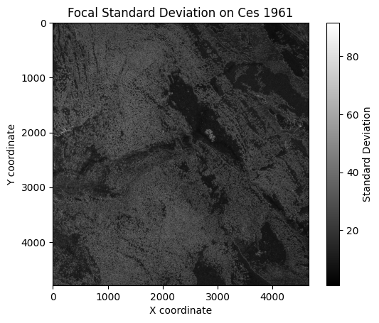
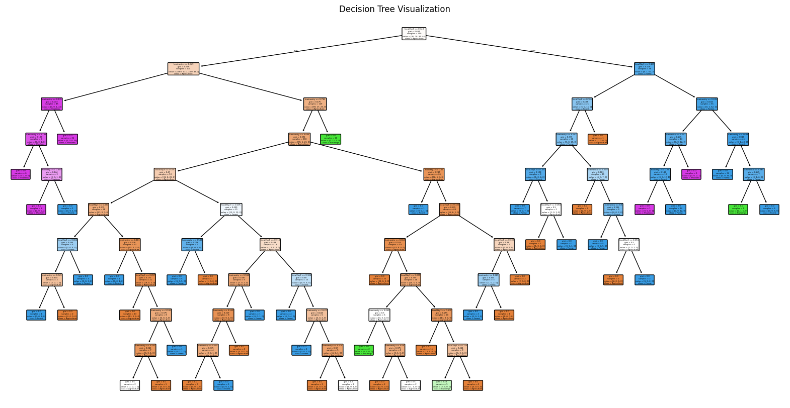

/Users/scli/Documents/ZHAW/Teaching/Remote Sensing 24/DataSupervised Learning
Task and Data
The task we will perform is to quantitatively analyze forest cover change over time in the area surrounding the village Ces in Ticino, Switzerland
We are provided with historic areal imagery from 1961 from swisstopo [source]
The resolution of the imagery is 1 m/pixel and it contains only one single band (!!!)
Data labelling
In preparation, I used QGIS to create labelled points for the following classes:
Forest
Buildings
Agriculture
Shadows
Splitting the data
We need to split our data into training and testing data
We will randomly select 70% of the data for training and the remaining 30% for testing class geometry
0 Forest POINT (2705962.315 1144392.76)
1 Agriculture POINT (2706346.759 1143465.656)
2 Buildings POINT (2706014.148 1144272.433)
3 Agriculture POINT (2706503.699 1143834.248)
4 Buildings POINT (2706361.604 1143918.234)
class geometry
0 Forest POINT (2705834.842 1144688.129)
1 Agriculture POINT (2705445.799 1142891.503)
2 Agriculture POINT (2706611.137 1143654.776)
3 Forest POINT (2706094.926 1142971.742)
4 Forest POINT (2706686.436 1143837.237)
Focal filters
Focal Filters, as we have seen in the chapter Focal, aggregate the values over a (moving) neighborhood of pixels.
We can determine the size and shape of this neighborhood by specifying a matrix
Using focal filters as features
To use the focal filters as features, the values of the focal filters need to be normalized to [0,1]
A simple way to do this is to use the min-max normalization:(4788, 4656, 2)Feature Extraction
We need to extract the values of the raster data at the labelled points
Since we only have one band, our result is a data.frame with one column[[0.10196079 0.26214316]
[0.6509804 0.07786678]
[0.9647059 0.08606696]
[0.63529414 0.05931668]
[0.85490197 0.07124717]
[0.32156864 0.28289023]
[0.42352942 0.41459754]
[0.5921569 0.17525773]
[0.62352943 0.06355354]
[0.84705883 0.07191712]
[0.6901961 0.16585611]
[0.19607843 0.07138631]
[0.21960784 0.06144182]
[0.20784314 0.12172291]
[0.6784314 0.13645704]
[0.3137255 0.06615763]
[0.39607844 0.18736853]
[0.65882355 0.07743527]
[0.19607843 0.26552513]
[0.6431373 0.06810501]
[0.16078432 0.08212049]
[0.75686276 0.08666154]
[0.5294118 0.20082372]
[0.61960787 0.060615 ]
[0.57254905 0.10142409]
[0.6745098 0.12465487]
[0.5647059 0.1163436 ]
[0.39607844 0.18375674]
[0.6784314 0.06730606]
[0.6745098 0.21106921]
[0.35686275 0.26777354]
[0.6 0.08929179]
[0.33333334 0.4465743 ]
[0.23137255 0.13758075]
[0.61960787 0.0871853 ]
[0.654902 0.0693176 ]
[0.62352943 0.08283527]
[0.32156864 0.3383572 ]
[0.58431375 0.124191 ]
[0.6509804 0.13314825]
[0.37254903 0.25614962]
[0.69803923 0.11503437]
[0.85882354 0.10232644]
[0.19607843 0.23494114]
[0.1254902 0.10515729]
[0.72156864 0.08894055]
[0.49411765 0.27382034]
[0.62352943 0.0990601 ]
[0.19607843 0.30660784]
[0.6039216 0.12460324]
[0.52156866 0.18766269]
[0.1254902 0.09180592]
[0.22352941 0.09642392]
[0.54901963 0.12128258]
[0.4392157 0.17400472]
[0.7294118 0.10015834]
[0.24313726 0.31338406]
[0.5019608 0.06029467]
[0.5411765 0.18511829]
[0.3019608 0.13152792]
[0.14901961 0.09406068]
[0.44705883 0.14289346]
[0.36862746 0.22460632]
[0.6509804 0.08583052]
[0.4862745 0.1030292 ]
[0.20392157 0.17741884]
[0.13725491 0.08529742]
[0.75686276 0.10099798]
[0.5058824 0.24661186]
[0.15294118 0.07253292]
[0.6313726 0.14117849]
[0.5137255 0.3132483 ]
[0.47058824 0.47003117]
[0.62352943 0.10708927]
[0.15686275 0.09963605]
[0.49803922 0.10050751]
[0.5764706 0.10126838]
[0.6666667 0.25481573]
[0.5803922 0.09387556]
[0.6313726 0.06895429]
[0.6509804 0.11387661]
[0.62352943 0.0914367 ]
[0.5647059 0.10461211]
[0.22352941 0.09120123]
[0.23921569 0.34999523]
[0.6039216 0.1518055 ]
[0.7647059 0.3927225 ]
[0.13725491 0.1013549 ]
[0.3019608 0.09672742]
[0.5294118 0.09907246]
[0.654902 0.08620296]
[0.6901961 0.08912117]
[0.64705884 0.08590272]
[0.5803922 0.06125949]
[0.6156863 0.08497412]
[0.07843138 0.13085762]
[0.63529414 0.08251596]
[0.6392157 0.11953335]
[0.16862746 0.11810128]
[0.83137256 0.05382076]
[0.6431373 0.13000493]
[0.69411767 0.06544764]
[0.28627452 0.35968328]
[0.6156863 0.13763966]
[0.59607846 0.09366969]
[0.6901961 0.10381914]
[0.7607843 0.46183786]
[0.4392157 0.08553918]
[0.63529414 0.12763865]
[0.18039216 0.26416656]
[0.56078434 0.11320527]
[0.2627451 0.08335342]
[0.59607846 0.10648851]
[0.20784314 0.10853735]
[0.65882355 0.04660885]
[0.76862746 0.07462181]
[0.6901961 0.10219085]
[0.6509804 0.10605752]
[0.7647059 0.07579523]
[0.83137256 0.07079514]
[0.40392157 0.41265163]
[0.34509805 0.21968694]
[0.1882353 0.10568993]
[0.5686275 0.08171288]
[0.5568628 0.08707839]
[0.25490198 0.2769741 ]
[0.43529412 0.3239646 ]
[0.8784314 0.08324837]
[0.7764706 0.09199098]
[0.48235294 0.08768069]
[0.6313726 0.5530043 ]
[0.49019608 0.2275861 ]
[0.59607846 0.08091126]
[0.21176471 0.09374393]
[0.63529414 0.21039213]
[0.6313726 0.10897567]
[0.5568628 0.11303923]
[0.6156863 0.07608557]
[0.38431373 0.13225892]
[0.5686275 0.09939864]
[0.5529412 0.15491095]
[0.5529412 0.12386692]
[0.2784314 0.35426846]
[0.54509807 0.17314 ]
[0.29803923 0.41869426]
[0.23921569 0.28350934]
[0.14901961 0.07287155]
[0.14117648 0.14113374]
[0.5058824 0.0964203 ]
[0.6039216 0.0735746 ]
[0.5882353 0.08311637]
[0.6392157 0.09027306]
[0.21960784 0.47516483]
[0.57254905 0.09677251]
[0.19215687 0.34971985]
[0.59607846 0.1591405 ]
[0.69803923 0.08446677]
[0.16862746 0.11143788]
[0.5647059 0.10157786]
[0.6313726 0.11684499]
[0.6156863 0.11913646]
[0.21176471 0.08491337]
[0.6862745 0.14261508]
[0.654902 0.08623093]
[0.41960785 0.21896833]
[0.49803922 0.15982881]
[0.5921569 0.05954251]
[0.21568628 0.31156158]
[0.3137255 0.33169332]
[0.6156863 0.0553725 ]
[0.90588236 0.07196159]
[0.6039216 0.10195018]
[0.28235295 0.33381876]
[0.19215687 0.13310237]
[0.64705884 0.15526712]
[0.20392157 0.10219085]
[0.6156863 0.08063827]
[0.34901962 0.18862654]
[0.6392157 0.10385638]
[0.6117647 0.06745463]
[0.08627451 0.1282476 ]
[0.5294118 0.09550096]
[0.40392157 0.21939215]
[0.6627451 0.23585008]
[0.47058824 0.13695094]
[0.5176471 0.1261194 ]
[0.2 0.09713975]
[0.23137255 0.09707684]
[0.5921569 0.1126986 ]
[0.7019608 0.12127965]
[0.6862745 0.05326508]
[0.5176471 0.11041094]
[0.14509805 0.10862352]
[0.6039216 0.07093266]
[0.54509807 0.15839772]
[0.18431373 0.28770727]
[0.57254905 0.10588135]
[0.16078432 0.13008767]
[0.7647059 0.3927225 ]
[0.1882353 0.09250477]
[0.21176471 0.08081824]
[0.53333336 0.08619297]
[0.69803923 0.08473092]
[0.88235295 0.09996233]
[0.6509804 0.08148215]
[0.28235295 0.1024053 ]
[0.50980395 0.11981462]
[0.14117648 0.07092556]
[0.1882353 0.35897404]
[0.16470589 0.09132853]
[0.11372549 0.12587096]
[0.27450982 0.13414745]
[0.42352942 0.17921814]
[0.6156863 0.08936732]
[0.6039216 0.14398317]
[0.54901963 0.09759886]
[0.5882353 0.09884445]
[0.5529412 0.10865927]
[0.7254902 0.2475318 ]
[0.5686275 0.14990848]
[0.19215687 0.20457283]
[0.5254902 0.17325412]
[0.3372549 0.30805764]
[0.29411766 0.22752243]
[0.49411765 0.11423267]
[0.54901963 0.10419437]
[0.13725491 0.08473296]
[0.6784314 0.12289291]
[0.6627451 0.11744136]
[0.6039216 0.1347266 ]
[0.5411765 0.19917668]
[0.5137255 0.16365586]
[0.65882355 0.07475323]
[0.65882355 0.11516236]
[0.41568628 0.24492726]
[0.60784316 0.11707294]
[0.57254905 0.07021881]
[0.44313726 0.18710338]
[0.12941177 0.08108649]
[0.21568628 0.07112908]
[0.59607846 0.09701568]
[0.30588236 0.12815678]
[0.627451 0.08687813]
[0.58431375 0.14373189]
[0.5647059 0.08196393]
[0.8862745 0.09798294]
[0.5529412 0.13633166]
[0.54509807 0.09737314]
[0.35686275 0.34160855]
[0.81960785 0.07126841]]
class luminosity focal3by3
0 Forest 0.101961 0.262143
1 Agriculture 0.650980 0.077867
2 Buildings 0.964706 0.086067
3 Agriculture 0.635294 0.059317
4 Buildings 0.854902 0.071247Training the model
We will use the rpart package to train a classification tree
The classification tree is also known as a decision tree
A decision tree has a flowchart-like structure (see Figure 6.1)
Classification trees does not always produce the best results, but they are simple and interpretableDecisionTreeClassifier(max_depth=10)In a Jupyter environment, please rerun this cell to show the HTML representation or trust the notebook.
On GitHub, the HTML representation is unable to render, please try loading this page with nbviewer.org.
DecisionTreeClassifier(max_depth=10)

Highest probability class
We can combine the four layers into a single layer by assigning the class with the highest probability to each pixel
For this, we can use the which.max function:Sample probabilities and predicted classes:
[1. 0. 0. 0.]
['Agriculture', 'Forest', 'Agriculture', 'Agriculture', 'Buildings']Model Evaluation
To evaluate the model, we will use the testing data['Forest', 'Agriculture', 'Agriculture', 'Forest', 'Forest'] Agriculture Buildings Forest Shadows
Agriculture 30 0 11 0
Buildings 5 2 2 0
Forest 9 0 30 0
Shadows 0 0 4 16
Accuracy: 0.72